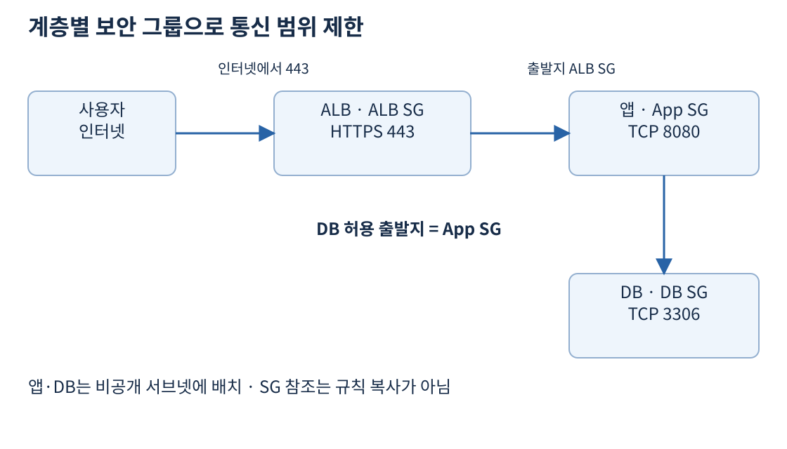
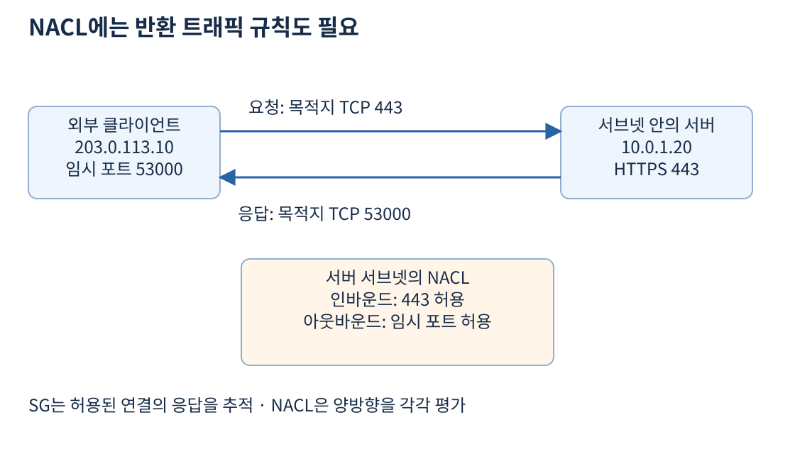
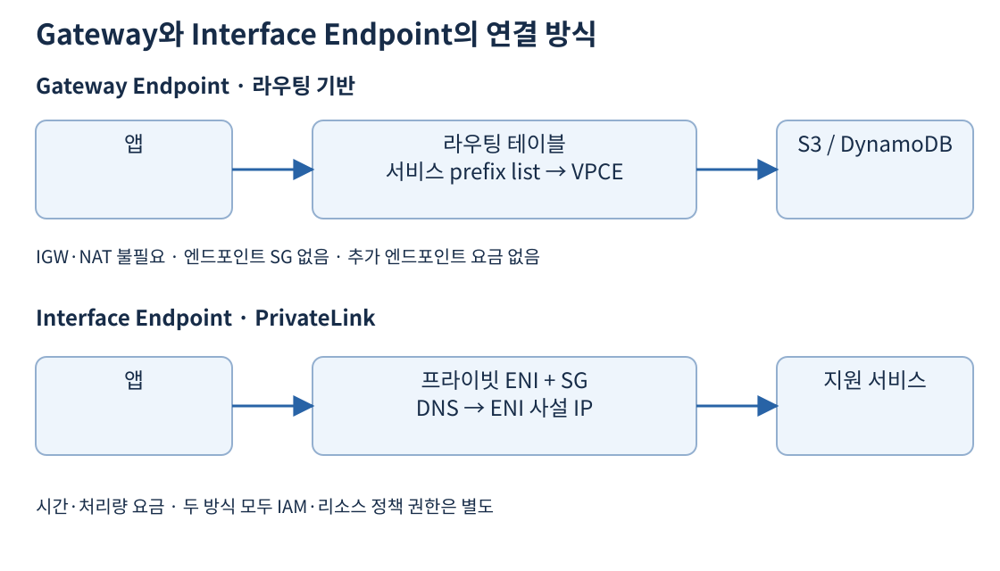

앱 서버가 S3의 사진을 읽으려면 두 종류의 조건이 필요하다. 먼저 S3 서비스까지 네트워크 요청이 도달해야 한다. 그다음 요청에 사용한 IAM 역할과 버킷 정책 등이 객체 읽기를 허용해야 한다. 경로가 맞아도 권한이 없으면 읽기를 거부당하고, 권한이 있어도 패킷이 목적지에 도달하지 못하면 요청을 보낼 수 없다.
라우팅 테이블은 목적지로 가는 길을 고른다. 보안 그룹과 NACL은 네트워크 트래픽을 허용하거나 차단한다. IAM·리소스 정책은 누가 어떤 AWS API를 실행할 수 있는지 판단한다. 이 셋을 하나의 “접근 허용” 설정으로 합쳐 생각하면 장애를 찾기 어렵다.
| 통제 | 주로 보는 내용 | 예 |
|---|---|---|
| 라우팅 | 목적지 IP와 다음 경로 | S3 주소는 Gateway Endpoint로 |
| 보안 그룹 | 프로토콜·포트·출발지 또는 목적지 | 앱에서 DB의 TCP 3306 허용 |
| NACL | 서브넷 경계의 IP·프로토콜·포트 | 특정 IP 범위에서 온 연결 거부 |
| IAM·버킷 정책 | 주체·작업·리소스·조건 | 역할에 특정 버킷의 GetObject 허용 |
| 엔드포인트 정책 | 엔드포인트를 통과할 주체·작업·리소스 | 사내 버킷으로의 요청만 통과 |
보안 그룹(Security Group, SG)은 EC2 같은 리소스의 네트워크 인터페이스에 적용하는 허용 규칙 집합이다. 인바운드는 리소스로 들어오는 트래픽, 아웃바운드는 리소스가 보내는 트래픽이다. 같은 연결의 요청과 응답도 방향은 반대다.
SG는 stateful, 즉 연결 상태를 추적한다. 허용된 인바운드 요청에 대한 응답은 아웃바운드 규칙에 관계없이 허용된다. 허용된 아웃바운드 요청의 응답도 같은 방식으로 들어올 수 있다. 따라서 앱이 TCP 443으로 외부 API에 요청했다면 그 응답을 받기 위해 앱 SG에 인터넷 전체의 임시 포트를 인바운드로 열 필요는 없다. 이는 응답에 관한 규칙이며, 외부가 임의로 시작한 새 연결까지 허용한다는 뜻은 아니다.
SG에는 허용 규칙만 있다. 명시적인 deny 규칙이나 NACL처럼 작은 번호부터 평가하는 순서는 없다. 여러 SG를 연결하면 각 SG의 허용 규칙을 합쳐 적용한다. 하나의 SG에서 443만 허용해도 다른 SG가 모든 포트를 허용하고 있으면 전체 접근은 넓어진다. 연결된 SG 전체를 확인해야 한다.
출처: SG 기본 동작과 연결 추적, 연결 추적의 세부 조건
웹 앱을 세 계층으로 나눈다면 인터넷 공개 ALB, 비공개 앱, 비공개 DB에 각각 SG를 만든다. ALB는 인터넷에서 HTTPS 443을 받는다. 앱은 출발지가 ALB SG인 TCP 8080만 받는다. DB는 출발지가 앱 SG인 DB 포트만 받는다. EC2가 교체되어 IP가 바뀌어도 해당 SG를 연결하면 계층별 통신 의도를 유지하기 쉽다.

SG 참조는 참조 대상 SG의 규칙을 복사하는 것이 아니다. 허용할 트래픽의 출발지나 목적지를 해당 SG와 연결된 인터페이스로 식별한다. 앱이 DB에 연결할 때는 앱의 아웃바운드도 허용돼야 하고 DB의 인바운드도 허용돼야 한다. DB SG에 앱 SG를 넣었다는 이유만으로 앱의 모든 외부 요청이 자동 허용되지는 않는다.
관리 접속도 전체 인터넷에 SSH를 여는 방식부터 선택하지 않는다. 관리 경로를 별도로 두거나 Systems Manager 같은 방식을 검토한다. 서버의 프라이빗 IP와 관리 권한은 구분하며, 비공개 서브넷이라고 모든 내부 사용자를 신뢰하지 않는다.
Network ACL은 서브넷 경계의 인바운드·아웃바운드 트래픽을 제어한다. 하나의 NACL을 여러 서브넷에 연결할 수 있지만 서브넷 하나는 한 번에 하나의 NACL에 연결된다. 같은 서브넷 안의 리소스 사이 트래픽을 NACL로 세밀하게 분리하는 방식은 맞지 않는다. 그 경우 SG로 리소스별 통신을 제한한다.
| 항목 | 보안 그룹 | NACL |
|---|---|---|
| 주요 적용 지점 | 연결된 네트워크 인터페이스 | 연결된 서브넷 경계 |
| 연결 상태 | Stateful | Stateless |
| 규칙 종류 | Allow만 | Allow와 Deny |
| 규칙 평가 | 허용 규칙 전체 조합 | 낮은 번호부터 첫 일치 적용 |
| 응답 트래픽 | 허용한 연결의 응답 추적 | 반대 방향 규칙도 필요 |
| 리소스 식별 | IP·SG 참조 등 | IP CIDR |
NACL은 stateless이므로 들어오는 요청을 허용해도 응답이 자동 허용되지 않는다. 예를 들어 외부 클라이언트 203.0.113.10:53000이 서버의 TCP 443으로 요청하면 응답은 서버의 443에서 클라이언트의 53000으로 간다. 서버 서브넷 NACL 인바운드에 443을 열고 아웃바운드에도 443만 열면 응답의 목적지 포트 53000이 막힐 수 있다.

이때 53000은 클라이언트가 선택한 임시 포트(ephemeral port)의 예다. 실제 범위는 OS와 중간 장치에 따라 달라지므로 모든 환경이 같은 좁은 범위를 쓴다고 가정하지 않는다. NAT나 로드 밸런서가 끼면 각 연결 구간의 출발지·목적지와 포트를 따로 살펴야 한다. 일반적인 호환성을 위한 넓은 임시 포트 범위와 조직의 제한 정책 중 무엇을 적용할지는 실제 클라이언트 범위를 확인해 정한다.
출처: NACL 동작, 임시 포트와 사용자 정의 NACL
| 규칙 번호 | 출발지 | TCP 목적지 포트 | 처리 |
|---|---|---|---|
| 100 | 203.0.113.0/24 |
443 | Deny |
| 200 | 0.0.0.0/0 |
443 | Allow |
* |
나머지 | 전체 | Deny |
이 인바운드 예에서 203.0.113.10의 HTTPS는 100번에 먼저 걸려 차단된다. 다른 IP의 HTTPS는 200번에서 허용된다. 두 줄 순서를 반대로 배치해 모든 IP를 먼저 허용하면 뒤의 좁은 deny까지 평가하지 않는다. 특정 IP 차단을 위해 NACL을 쓴다면 “더 구체적인 CIDR이 자동 우선”이라고 생각하면 안 된다. CIDR의 가장 긴 접두사로 경로를 고르는 라우팅 테이블과 다른 평가 방식이다.
기본 NACL은 처음에 모든 인바운드·아웃바운드를 허용한다. 새 사용자 정의 NACL은 규칙을 추가하기 전에는 차단한다. NACL 교체 직후 전체 통신이 끊겼다면 반환 규칙뿐 아니라 이 초기 상태도 확인한다. IPv4와 IPv6 규칙도 각각 필요하다.
출처: NACL 규칙 평가, 기본·사용자 정의 NACL
비공개 앱이 S3에 매번 큰 파일을 저장할 때 NAT를 통해 퍼블릭 서비스 엔드포인트로 요청할 수 있다. 그러나 같은 리전 S3 접근만을 위해 모든 데이터를 NAT로 보내면 NAT 처리량 비용이 늘어난다. Gateway VPC Endpoint는 S3 또는 DynamoDB로 가는 경로를 제공하며 그 통신에 IGW나 NAT가 필요하지 않다.
Gateway Endpoint를 만들 때 사용할 라우팅 테이블을 연결한다. 해당 서비스의 관리형 prefix list를 목적지로 하는 경로가 테이블에 추가된다. S3 목적지에 맞는 더 구체적인 경로가 NAT행 0.0.0.0/0보다 우선해 S3 요청이 엔드포인트를 사용한다. 일반 인터넷 API 요청은 계속 NAT 경로를 사용할 수 있다.

Gateway Endpoint 자체에는 추가 사용 요금이 없지만 S3 저장·요청·전송 같은 대상 서비스 비용이 모두 없어지는 것은 아니다. 이 엔드포인트에 SG를 연결하지는 않는다. 앱 SG에서 S3행 아웃바운드가 허용돼야 하고 NACL도 관련 요청과 응답을 허용해야 한다.
Gateway Endpoint는 VPC 네트워크 전체를 다른 네트워크에 공개하는 연결이 아니다. 피어링한 VPC나 온프레미스가 한 VPC의 Gateway Endpoint를 경유해 함께 쓰는 설계를 가정하지 않는다. 이런 접근 요구가 있으면 해당 서비스의 Interface Endpoint 등 다른 구성을 검토한다. S3와 DynamoDB 모두 Gateway 방식을 지원하며, “이 서비스는 어떤 경우에도 Interface Endpoint를 지원하지 않는다”는 식으로 외우지 않는다.
출처: Gateway Endpoint 지원 서비스·라우팅·비용, S3 Gateway Endpoint의 제한
Interface VPC Endpoint는 선택한 서브넷에 프라이빗 IP를 가진 ENI를 만든다. 앱은 이 주소로 서비스에 연결한다. 이 방식은 AWS PrivateLink를 사용하며 여러 AWS 서비스와 서비스 제공자가 공개한 엔드포인트 서비스에 연결할 때 사용한다. 지원 여부와 기능은 서비스마다 확인한다.
ENI가 있다는 점에서 라우팅 테이블에 S3 prefix list 경로를 넣는 Gateway Endpoint와 다르다. Interface Endpoint에는 SG를 연결하며 보통 앱의 필요한 출발지에서 HTTPS 443을 받도록 허용한다. 엔드포인트를 만들어도 SG가 막으면 연결되지 않는다. 사용할 AZ별로 엔드포인트를 배치해 특정 AZ 의존성을 줄일 수 있지만 ENI의 주소 소비와 시간·데이터 처리 요금도 늘어난다.
프라이빗 DNS를 활성화하면 지원 서비스의 익숙한 DNS 이름을 VPC 내부에서 엔드포인트의 사설 주소로 해석할 수 있다. 이 기능에는 VPC의 DNS 지원·호스트 이름 설정 등 전제가 있다. 앱 코드의 서비스 주소를 그대로 쓰고도 사설 경로를 이용할 수 있으나 DNS 설정이 맞는지 실제 조회 결과를 확인해야 한다. 프라이빗 DNS를 켠다고 서비스 API 권한까지 생기지는 않는다.
출처: Interface Endpoint 생성·ENI·DNS, PrivateLink 개념
| 요구 | 우선 살펴볼 방식 | 판단 이유 |
|---|---|---|
| 같은 VPC 앱에서 같은 리전 S3·DynamoDB 접근 | Gateway Endpoint | 라우팅 기반, 추가 엔드포인트 요금 없음 |
| 다른 지원 AWS API를 인터넷 없이 호출 | Interface Endpoint | 해당 서비스의 PrivateLink 지원 확인 |
| 온프레미스에서 사설 연결로 S3 접근 | Interface Endpoint 등 | 하이브리드 DNS·연결 구조 함께 설계 |
| 외부 업체의 특정 서비스를 사설로 소비 | PrivateLink Endpoint Service | VPC 전체 연결 대신 특정 서비스 노출 |
PrivateLink는 소비자가 제공자의 네트워크 전체에 접속할 수 있게 해주는 만능 터널이 아니다. 제공된 서비스에 대한 접근을 연결한다. 서비스 제공자가 연결 승인을 요구하거나 추가 인증을 요구할 수도 있다. 네트워크 사설 연결과 애플리케이션 로그인도 서로 다른 단계다.
출처: PrivateLink 동작, AWS 서비스 접근
엔드포인트 정책은 이 경로를 통과하는 요청을 제한하는 별도의 정책이다. IAM 정책과 S3 버킷 정책을 대체하거나 원래 없던 권한을 새로 주는 장치가 아니다. 앱 역할에 객체 읽기가 없으면 엔드포인트 정책을 Allow로 해도 그 역할이 읽기 권한을 얻지는 않는다. 반대로 IAM이 허용해도 엔드포인트 정책의 제한이나 명시적 Deny 때문에 실패할 수 있다.
회사 앱이 회사 버킷만 읽어야 한다면 앱 역할은 필요한 객체에 GetObject를 허용하고, 엔드포인트 정책에서도 회사 버킷 범위만 허용할 수 있다. 버킷 정책에서 aws:SourceVpce 조건을 활용하면 지정 엔드포인트를 통한 요청으로 접근을 제한할 수 있다. 단, 이 조건을 강하게 걸면 콘솔이나 다른 경로의 관리 접근도 차단될 수 있으므로 관리 주체와 예외 경로를 먼저 검토한다.
연결 시간 초과는 경로·DNS·SG·NACL 문제를 먼저 의심할 수 있고, 서비스에서 돌려준 AccessDenied는 정책을 조사할 단서다. 응답 종류만으로 원인을 확정하지 말고 실제 요청 주체, 리소스 ARN, 적용되는 정책을 함께 본다.
출처: 엔드포인트 정책의 역할, 특정 VPC 엔드포인트로 버킷 접근 제한
VPC Peering은 두 VPC가 사설 주소로 통신하도록 연결한다. 연결을 승인한 뒤 필요한 서브넷의 라우팅과 보안 규칙을 양쪽에 구성한다. CIDR가 겹치는 VPC는 피어링할 수 없으므로 처음 주소를 나눌 때 다른 계정·리전·온프레미스와의 연결 가능성을 고려한다.
A와 B를 연결하고 B와 C를 연결해도 A가 B를 거쳐 C로 가는 전이적 연결은 제공되지 않는다. 또한 피어링 상대 VPC의 IGW나 NAT, Gateway Endpoint를 자신의 출구처럼 사용하는 방식은 지원되지 않는다. 여러 네트워크를 허브로 묶는 요구는 13일 차 Transit Gateway·하이브리드 연결에서 이어진다.
보안 분리는 “서브넷을 세 개 만들었다”로 끝나지 않는다. 계층별 SG, 필요한 통신만 있는 라우팅, 서비스 접근 정책이 함께 있어야 한다. DB를 비공개 서브넷에 두어도 VPC 전체에서 DB 포트를 허용하면 내부 침해의 이동 범위는 여전히 넓다.
웹 서버가 HTTPS 요청을 받을 때 클라이언트:54000 → 서버:443은 인바운드 목적지 443이다. 응답 서버:443 → 클라이언트:54000은 아웃바운드 목적지 54000이다. 반대로 앱이 외부 API를 호출하면 앱 아웃바운드 목적지는 443, 인바운드 응답 목적지는 앱의 임시 포트다. SG는 허용된 연결의 응답을 상태 추적으로 허용하지만 NACL은 각 방향을 별도 규칙으로 허용해야 한다. 작은 번호의 넓은 거부를 둔 뒤 큰 번호에 좁은 허용을 추가해도 NACL 예외가 되지 않는다.
ALB·앱·DB를 각각 SG로 구분하면 앱은 ALB SG에서 오는 앱 포트만, DB는 앱 SG에서 오는 DB 포트만 받을 수 있다. SG 참조는 상대 SG의 규칙 복사가 아니라 연결된 인터페이스를 출발지·목적지로 식별하는 방식이다. 신규 앱의 IP가 바뀌어도 같은 SG를 연결하면 IP 목록을 손으로 바꿀 필요가 없다.
온프레미스는 VPC의 S3 Gateway Endpoint를 전이 출구로 공유하지 못한다. S3 Interface Endpoint의 사설 ENI로 접근하려면 VPN·Direct Connect의 왕복 경로와 SG뿐 아니라 DNS 해석도 맞춰야 한다. 기존 이름을 유지하는 하이브리드 접근에서는 사내 DNS가 VPC Resolver inbound endpoint로 질의하게 한다. S3의 inbound 질의에만 private DNS를 적용하는 옵션은 VPC 내부 대량 전송을 Gateway 경로에 남겨 비용을 줄일 수 있지만 Gateway Endpoint 유지 등 전제가 있다.
IAM에 Allow가 있어도 버킷 정책이 지정 aws:SourceVpce 이외 요청을 명시적으로 Deny하면 인터넷 경로 요청은 거부된다. endpoint 정책 Allow는 API 권한을 새로 주는 수단도 이 Deny를 덮는 수단도 아니다. 연결 성공과 API 허용을 따로 판단한다.
SG 연결·NACL 반환·하이브리드 DNS·endpoint 정책 심화에서 실제 구성을 비교한다. 핵심은 상태 추적과 경로·권한 분리이며 특수 DNS 옵션의 상세 설정은 보충이다. NACL 임시 포트, S3 하이브리드 접근, 정책 평가.
공식 자료 확인일: 2026-11-02